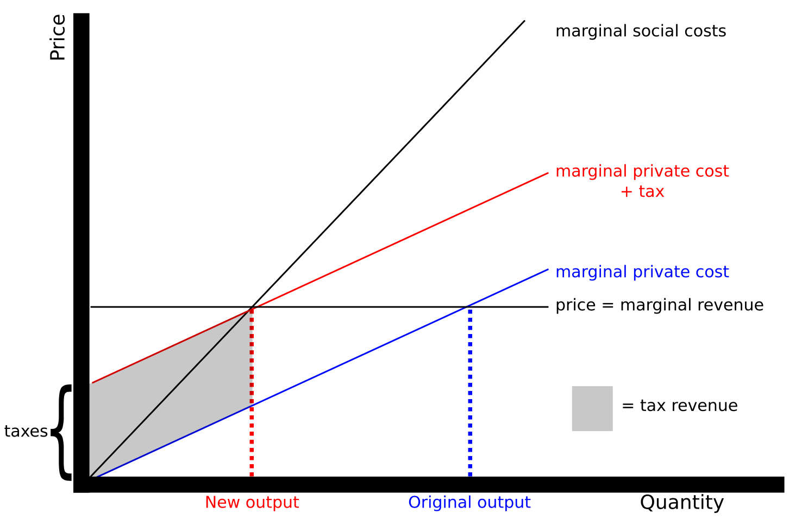
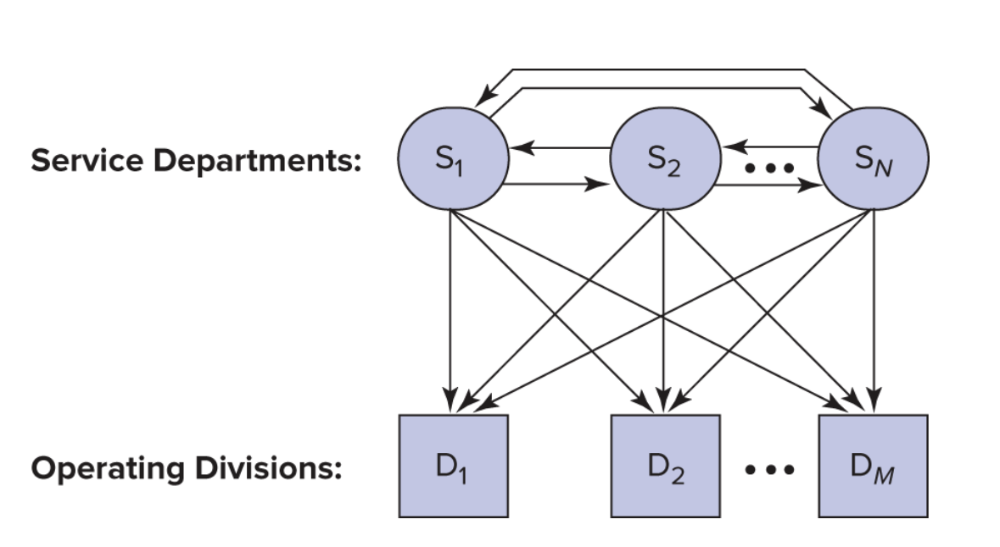
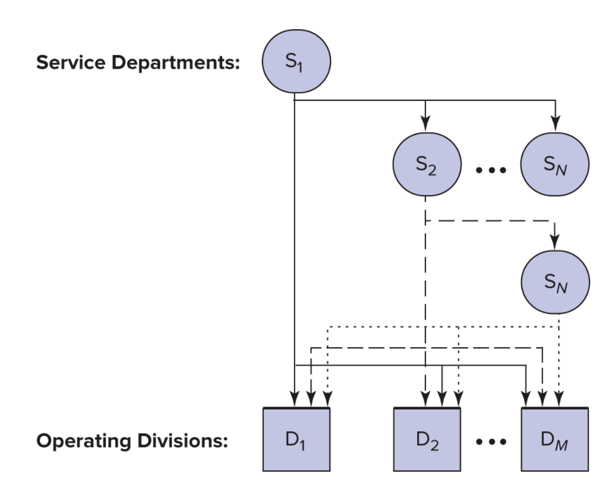

Cost Allocation
Dr. Arthur Morris
HKUST School of Business and Management
Transfer pricing
- Transfer pricing is the process of using a price to facilitate decentralized decision making by sharing information and aligning incentives within the firm.
Transfer pricing
- In simple examples like the initial questions in the Vik-Giger case it is easy to figure out what the price of a product should be.
Transfer pricing
- In that case we took for granted that we could easily quantify the costs of making the product.
- We also noted that transferring fixed costs (those that do not vary with output) is not at all simple… but we didn’t do anything about it.
- Cost allocation is the process of quantifying the costs of making a product.
Cost allocation
- Cost allocation is the process of connecting the sacrifice of resources (often a cash outflow) to the process, product, program, or department on behalf of which the resources were sacrificed.
Cost allocation
- We are trying to track who consumed which resources and when.
- We do this for many reasons and in many different contexts, so there is no one approach that is better in every situation.
Cost allocation
- Note that transfer pricing requires cost allocation, but not all cost allocations are done to support transfer pricing.
Which costs?
- We want to track all costs, but cost allocations focus on common, indirect, and overhead costs (all related terms)
- We allocate direct costs directly to the activities or products that consume them.
Cost allocation
- Most costs are direct at some point, and then flow into an area of the organization where they become indirect.
- For example, a networking department has many direct costs, but many departments access it indirectly.
Consider email
- we can easily track who uses it.
- we have good information about how much it costs.
- but it is difficult to define the relationship between email use and value creation in the design, manufacturing and sales department.
Consider aspirin administered in an American Hospital
- Aspirin costs $ 0.02 per tablet.
- How much is billed to the patient/insurer?
Consider aspirin administered in an American Hospital
| Two aspirin tablets |
$ 0.040 |
| Physician (Direct Labor) |
$ 1.050 |
| Pharmacist (Direct Labor) |
$ 1.330 |
| Nurse (Direct Labor) |
$ 0.321 |
| Cup |
$ 0.025 |
| Indirect labor (recordkeeping and orderly) |
$ 0.800 |
| Shared and shifted costs: |
|
| Unreimbursed Medicare |
$ 0.450 |
| Indigent care |
$ 0.332 |
| Malpractice insurance and uncollectible receivables |
$ 0.380 |
| Excess bed capacity |
$ 0.429 |
| Other administrative and operating costs |
$ 0.688 |
| Product cost |
$ 5.845 |
| Product cost |
$ 5.845 |
| Hospital overhead costs @ 53.98% |
$ 3.16 |
| Full cost (incl. overhead) |
$ 9.00 |
| Profit |
$ 9.00 |
| Price (per dose) |
$18.00 |
Is this an informative price?
Cost allocation is an old question
Indirect expense is one of the most important of all the accounts appearing on the books of the manufacturer. Methods of handling its [allocation] have given rise to more arguments than the descent of man. It is the rock upon which many a ship of industry has been wrecked.
Consider a manufacturing firm
May have many different allocation processes for a single product.
- Taxes (one set of depreciations, and FC allocations)
- Financial reporting
- Government contracts
- Other contracts
- Internal incentives
- Internal cost control
Incentive effects of cost allocations
- Cost allocations modify behavior a la Pigouvian taxes.
- All cost allocations, like all taxes, modify behavior. They are never neutral.
Pigouvian tax
Using a tax to modify behavior
Why do we have common costs?
- The tax analogy helps us think about why cost allocations might be useful/harmful.
- But this reasoning doesn’t explain why we are ‘taxing’ aspirin in the hospital example.
- Common costs arise when it is less expensive to provide a good or service centrally (synergy).
We are trying to communicate information about the costs and benefits (synergy) of coopertative resource allocation within the firm.
Consider the following:
- A firm manufactures spinning hard drives and solid state hard drives
- The two divisions share a building but are separate profit centers
- Managers are compensated based on profits
How do we treat common costs?
- If we deduct common costs from the manager’s profits they will try to reduce common costs
- Use too little IT services.
- If we do not, then they will demand more of the common resources
- Use too much IT services.
How do we treat common costs?
- What we choose will depend on whether the managers can control their consumption of the common costs.
- Allocation of the factory itself?
- Allocation of cleaning crew?
- Allocation of IT?
- Allocating common costs is widespread, so overconsumption of common resources seems to be a common concern.
Allocating common costs
How should we interpret the status quo?
“Most firms allocate common costs, presumably to prevent individual divisions from overconsuming the common resource.” (Zimmerman Textbook)
- and yet, forcing firms to adopt cost accounting systems improves their performance, suggesting that some firms may just be using allocations from financial or tax accounting. (Samuels, 2021)
Allocating common costs
So how do we go about this?
To allocate we need an allocation base/cost driver:
An allocation base or cost driver is the metric used to allocate costs (like the aspirin in the hospital example).
- Choosing an allocation base is one of the most important topics in all of accounting. Choosing correctly requires analysis of processes, data, and incentives.
- This focus on this critical aspect of accounting is missing from most texts and this course.
- In this lecture we will consider the consequences of these choices.
Insulating and non-insulating allocations
- the choice of driver can either insulate the manager’s pay from the cost or not.
A. Non-insulating method
A noninsulating method uses a driver that varies with the manager’s performance measures (e.g. div. operating income)
| Div. Op. Income |
$8,000 |
$8,000 |
$9,000 |
$2,000 |
| Allocated costs |
(800) |
(800) |
(900) |
(200) |
| Net income |
$7,200 |
$7,200 |
$8,100 |
$1,800 |
This is a tax on operating income.
B. Insulating method
An insulating allocation uses a driver that does not vary with the manager’s performance measures (e.g. floorspace).
| Div. Op. Income |
$8,000 |
$8,000 |
$9,000 |
$2,000 |
| Allocated costs |
(600) |
(400) |
(600) |
(400) |
| Net income |
$7,400 |
$7,600 |
$8,400 |
$1,600 |
This is a tax on floorspace.
Allocations in practice
- The allocation bases chosen (what to tax) affect the use of resources inside the firm.
- Cost allocations also create incentives to cooperate.
- Cost allocations can distort reported performance
Allocating service department costs
Now that we’re clear on all the things that can go wrong, lets try to do it!
Allocating service department costs
Usage flows among N service departments and M production departments.
Example:
Capacity of service departments used:
| Telecoms |
10% |
20% |
40% |
30% |
100% |
| IT |
25% |
15% |
35% |
25% |
100% |
Service department costs:
| Telecoms |
2,000,000 |
| IT |
6,000,000 |
| Total |
8,000,000 |
Service dept actual usage allocation:
| Telecoms |
$0.8 |
$0.6 |
$1.4 |
$2.0 |
$0.6 |
|
(40% \(\times\) $2) |
(30% \(\times\) $2) |
|
|
|
| IT |
$2.1 |
$1.5 |
$3.6 |
$6.0 |
$2.4 |
|
(35% \(\times\) $6) |
(25% \(\times\) $6) |
|
|
|
| Total |
|
|
$5.0 |
$8.0 |
$3.0 |
(Dollars are in millions)
Direct allocation method:
| Telecoms |
40%/(40% + 30%) = 4/7 |
30%/(40% + 30%) = 3/7 |
100% |
| IT |
35%/(35% + 25%) = 7/12 |
25%/(35% + 25%) = 5/12 |
100% |
| Telecoms |
4/7 \(\times\) $2 = $1.143 |
3/7 \(\times\) $2 = $0.857 |
$2 |
| IT |
7/12 \(\times\) $6 = $3.5 |
5/12 \(\times\) $6 = $2.5 |
$6 |
| Total |
$4.643 |
$3.357 |
$8 |
Good news, Bad news
- Good news: everything is allocated
- Bad news: this is not a good estimate of opportunity cost per unit of service
What we know:
While we do not know the correct opportunity cost, we do know that the direct allocation method excludes the service departments’ use of other service departments and therefore incorrectly states the opportunity cost of each service department.
Step-down method
The step-down method
Step-down shares (start w/ Tele)
| Telecoms |
20%/(20% + 40% + 30%) |
40%/90% |
30%/90% |
|
|
= 2/9 |
= 4/9 |
= 1/3 |
100% |
| IT |
None |
35%/60% |
25%/60% |
|
|
|
= 7/12 |
= 5/12 |
100% |
In this step we allocate the cost of Telecoms to IT, Cars, and Trucks. So IT includes the cost of Telecoms when we allocate it to Cars and Trucks. We use these shares to allocate costs on the next slide.
Step-down allocations
| Telecoms |
$2 |
2/9 \(\times\) $2 |
4/9 \(\times\) $2 |
1/3 \(\times\) $2 |
|
|
|
= $0.444 |
= $0.889 |
= $0.667 |
$1.556 |
| IT |
$6 + $0.444 |
None |
7/12 \(\times\) $6.444 |
5/12 \(\times\) $6.444 |
|
|
|
|
= $3.759 |
= $2.685 |
$6.444 |
| Total |
|
|
$4.648 |
$3.352 |
$8.000 |
Does the order matter?
It may! In this case the difference in magnitudes is relatively minor.
Step-down shares (start w/ IT)
| IT |
25%+/(25% + 35% + 25%) |
35%/85% |
25%/85% |
100% |
|
= 5/17 |
= 7/17 |
= 5/17 |
100% |
| Telecoms |
None |
4/7 |
3/7 |
100% |
Step-down allocations
| IT |
$6 |
5/17 \(\times\) $6 |
7/17 \(\times\) $6 |
5/17 \(\times\) $6 |
|
|
|
= $1.765 |
= $2.470 |
= $ 1.765 |
$4.235 |
| Telecoms |
$2 + $1.765 |
None |
4/7 \(\times\) $3.765 |
317 \(\times\) $3.765 |
|
|
|
|
= $ 2.151 |
= $ 1.614 |
$3.765 |
| Total |
|
|
$4.6210 |
$3.379 |
$8.000 |
costs are in millions.
Does the order matter?
- The costs allocated to Cars and Trucks differ by only $27,000 depending on whether telecommunications or IT is chosen first.
- The difference of $27,000 is less than 1 percent of the total costs allocated.
Does the order matter?
- However, very different incentives result depending on which method is used.
- Allocated costs are taxes, and taxes effect behavior.
- And these can lead to the Death Spiral if the tax is too high!
Illustration:
- To illustrate lets expand the telecommunications and IT example.
- Suppose the allocation base in telecommunications is the number of telephones in each department, and
- in IT the allocation base is the number of gigabytes of disk space used.
Illustration:
- Transfer prices are to be established for telephones and gigabytes.
- Allocated costs will be used to compute the transfer prices.
The allocation bases:
| Telecomm |
3,000 Telephones |
| IT |
12 million gigabytes |
Cost allocated per phone
Number of phones
| Telecoms |
– |
– |
– |
| IT |
– |
20% \(\times\) 3,000 = 600 |
– |
| Cars |
40% \(\times\) 3,000 = 1,200 |
40% \(\times\) 3,000 = 1,200 |
40% \(\times\) 3,000 = 1,200 |
| Trucks |
30% \(\times\) 3,000 = 900 |
30% \(\times\) 3,000 = 900 |
30% \(\times\) 3,000 = 900 |
| Phones |
2,100 |
2,700 |
2,100 |
- Note: that telecom is always ‘–’ here because we are considering how to allocate it’s costs. The in the ‘IT first’ column the telecom costs already include IT costs.
Cost allocated per phone
| Cost per phone |
$2M/2,100 |
$2M/2,700 |
$3.765M/2,100 |
|
= $ 952 |
= $ 741 |
= $1.793 |
| Number of phones: Cars |
1,200 |
1,200 |
1,200 |
| Telecoms charged to Cars |
$1.143 |
$0.889 |
$ 2.151 |
Does the order matter?
The order can lead to large changes in the ‘tax’ on the allocation base!
Cost allocated per Gigabyte of Storage
Number of Gigabytes of Storage
| Telecoms |
– |
– |
25% \(\times\) 12 = 3.0 |
| IT |
– |
– |
– |
| Cars |
35% \(\times\) 12 = 4.2 |
35% \(\times\) 12 = 4.2 |
35% \(\times\) 12 = 4.2 |
| Trucks |
25% \(\times\) 12 = 3.0 |
25% \(\times\) 12 = 3.0 |
25% \(\times\) 12 = 3.0 |
| Gigs |
7.2 |
7.2 |
10.2 |
- Note: that IT is always ‘–’ here because we are considering how to allocate it’s costs. The in the ‘Telecom first’ column the IT costs already include Telecom costs.
Cost allocated per Gigabyte of Storage
| Cost per gig |
$6/7.2 = $0.833 |
$6.44/7.2 = $0.895 |
$6/10.2 = $0.588 |
| Number of gigs in Cars |
4.2 |
4.2 |
4.2 |
| IT charged to Cars |
$3.5 |
$3.759 |
$2.470 |
Cost allocated per Giga of storage (Millions except cost per Gb)
Consider the impact on behavior:
- The sequence of service departments in the step-down method changes the costs of each service.
- Because the cost per phone (which represents the transfer price) varies depending whether or not it includes IT costs,
- the cost allocation scheme affects the decision of each department to add or drop phones.
- The same conclusions hold for the information technology department.
Does the order matter?
- Note the wide variation in cost per gigabyte.
- The cost varies from $0.588 per gigabyte under the step-down method with IT chosen first
- to $0.895 under the step-down method with telecommunications chosen first.
The central issues with the step-down method:
- The sequence used is arbitrary and large differences can result in the cost per unit of service using different sequences.
- Also, the step-down method ignores the fact that although departments earlier in the sequence use service departments later in the sequence, earlier departments are not allocated these costs.
- Get this wrong and risk the death spiral.
Death spiral
- A feedback loop leading to inefficient outcomes, sometimes bankruptcy.
- Result of ‘cost’ reduction incentives, which do not actually reduce costs.
- Arise when common costs consist primarily of fixed costs and users have discretion over their use of the common product or service.
Death Spiral (not literal) in Corporate Jets
- The annual operating cost of a corporate jet ranges between $40 and $50 million.
- Corporate flight departments routinely charge part or all of these costs to those internal departments using the aircraft.
- Allocating operating costs to internal users allows flight departments to justify the expense of the aircraft to top management, to apportion operating costs according to usage patterns, and to prevent overscheduling.
Death Spiral (not literal) in Corporate Jets
- Initially, only the direct operating costs (fuel and landing fees) were charged back to departments using the aircraft, while fixed costs were not (pilot salaries, maintenance costs, hangar rental, and insurance).
These costs are all variable, so no (figurative) danger
Death Spiral (not literal) in Corporate Jets
- When firms faced downturns in their business, a popular expense reduction target was to cut corporate jet usage by allocating the fixed costs along with the direct costs of operating the aircraft.
This makes sense, but now we are allocating fixed costs, and managers can choose how much to use! But their choice does not change the fixed costs.
Death Spiral (not literal) in Corporate Jets
- Since fixed costs accounted for about 50 percent of the total cost at full utilization, usage rapidly shrank to the point where fixed costs rose to 85 percent of the total allocated cost.
What happens when taxes go up?
Death Spiral (not literal) in Corporate Jets
- Jet usage dropped further, and each flight hour allocated became even more costly, sometimes approaching the cost of chartering a jet.
- At this point there is no economy of scale and no reason to produce the service internally!
Can we avoid this?
- When there is excess capacity only allocate the variable cost of the resource.
- Alternatively, some of the fixed costs could be excluded from the transfer price.
- Using practical capacity instead of actual utilization in calculating the overhead rate.
A caution:
If you are not careful, you might use arithmetic to convince yourself that adding new products or services may decrease fixed costs.
No production decision, other than actually changing the fixed costs themselves, can change fixed costs.
Allocating capacity cost: depreciation
- Not allocating some (or all) of the fixed cost can reduce the death spiral.
- For example, allocate only the fixed cost of the capacity actually being used.
- If 40 percent excess capacity exists, allocate only 60 percent of the depreciation.
- However, this solution to the death spiral creates other concerns.
Allocating capacity cost: depreciation
- How much of the existing common resource should each user use?
- The current capacity level was chosen for some reason!
- If excess capacity exists, any charge discourages its use.
- Allocating accounting depreciation to users commits them to recovering at least the historical cost of the asset.
The trade-off
When allocating depreciation the firm trades off:
- the efficient investment in the common resource and
- its efficient utilization after acquisition.
On one hand… on the other hand:
Charging depreciation helps control the overinvestment problem, but at the expense of underutilizing the asset after acquisition.
Most firms charge users for depreciation.
Control of overinvestment is the habit of financial accounting systems
- Full absorption costing allocates fixed costs, and is the default accounting system.
- Control of the overinvestment problem dominates decision-making by default.
- Thus, errors involving asset under-utilization (the death spiral) are the probable failure mode.
Next week we will try to improve on the step-down method.
Two Examples (if there is time)
Step-Down Allocations and Medicare
Step-Down Allocations and Medicare
- The U.S. Medicare system requires each hospital to file a Medicare Cost Report to get reimbursed for providing health care to Medicare patients.
- To file this report, all cost centers in the hospital (administration, finance, human resources) that supply services to other cost centers and major functional services, such as the emergency department, surgery, and maternity, are ordered in a step-down sequence.
Step-Down Allocations and Medicare
- Each cost center allocates its cost using an allocation base.
- For example, nursing administration costs might be allocated using nursing hours or nursing salaries in each functional service.
Step-Down Allocations and Medicare
- The Medicare Cost Report defines the order of the cost centers to be used in the step-down method but allows each hospital some discretion.
- For example, administration and general costs are usually allocated last. -However, some hospitals move it up in the list.
Step-Down Allocations and Medicare
- The step-down method allocates the cost of each service center, as well as the costs stepped down to it, to the major functional services.
- Many hospitals use the data generated by the Medicare Cost Report to set prices and to negotiate third-party contracts.
- Note that the Medicare system is one of the few parts of the US health system that actually works!
SOURCE: M. Muse and B. Amoia, “Step Up to the Step-Down Method,” Healthcare Financial Management, May 2006.
Next class
We will try to improve on the step-down method.
Getting this right matters! (Lenovo)
- Who has used a Lenovo ThinkPad?
Example: Cost Allocations at IBM:
During the 1980s and early 1990s, IBM had the policy of allocating costs from one line of business to another. Managers in those lines of business constantly argued that some of their overhead should be carried by other IBM businesses.
Example: Cost Allocations at IBM:
IBM also typically allocated all of the R&D of a new technology to the line of business first using the technology, and subsequent users were able to utilize it for free.
Example: Cost Allocations at IBM:
This cost allocation system masked the true profitability of many IBM businesses for years. IBM claimed it was making money in its PC business.
Example: Cost Allocations at IBM:
But in 1992, “as IBM began to move away from its funny allocation system, IBM disclosed that its PC business was unprofitable.” In 2004, IBM sold its PC division to China-based Lenovo Group for $1.75 billion.